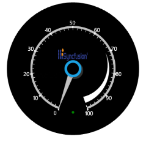
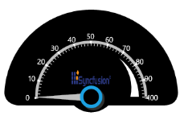

You have now created a windows phone application and deployed Essential Gauge.
Let’s see how to create a Circular Gauge in this application.
Circular Gauges can be created either with full circle frame type or half circle frame type. This is done either by using XAML code or with C# code.
Step-by-step instructions for creating a Circular Gauge
1. Add reference in XAML as well as in the procedural code and then add the CircularGauge to the panel (the default value for Frame Type is “Circular” and for Radius is “150”).
|
[XAML]
<Grid x:Name="LayoutRoot" Background="White"> <!--Adding Gauge to the application.--> <syncfusion:CircularGauge Radius="170" Name="circularGauge1" /> </Grid> |
|
[C#]
CircularGauge circulargauge = new CircularGauge(); PivotItem pivotitem = new PivotItem(); pivotitem.Content = circulargauge; LayoutRoot.Children.Add(pivotitem);
|
2. To add a Scale to the Circular Gauge in Windows Phone Application, use the below code.
|
[XAML]
<sfgauge:CircularGauge Radius="170" Name="circularGauge1" > <!--Adding Scale to the gauge.--> <sfgauge:CircularGauge.Scales> <sfgauge:CircularScale x:Name="m_scale" Radius="100" StartAngle="110" GapSweepAngle="320" ScaleBarSize="5" ShadowOffset="5" Minimum="0" Maximum="100" MinorIntervalValue="2" MajorIntervalValue="10" BorderBrush="Gray" Background="Silver" Location="50,50" /> </sfgauge:CircularGauge.Scales> </sfgauge:CircularGauge> |
|
[C#]
CircularGauge circulargauge1 = new CircularGauge(); PivotItem pivotitem = new PivotItem(); pivotitem.Content = circulargauge; LayoutRoot.Children.Add(pivotitem);
// Creating scale object and adding to gauge. CircularScale c_scale = new CircularScale(); c_scale.Radius = 110; c_scale.StartAngle = 120; c_scale.GapSweepAngle = 300; c_scale.ScaleBarSize = 10; c_scale.Location = new Point(50, 50); c_scale.ShadowOffset = 5; c_scale.ShadowOffset = 5; c_scale.Minimum = 0; c_scale.Maximum = 100; c_scale.MinorIntervalValue = 2; c_scale.MajorIntervalValue = 10; c_scale.Background = new SolidColorBrush(Colors.LightGray); c_scale.BorderBrush = new SolidColorBrush(Colors.Blue); c_scale.BorderThickness = new Thickness(0.5); circulargauge1.Scales.Add(c_scale); |
3. To add a Pointer to the Circular Gauge in Windows Phone Application, use the below code.
|
[XAML]
<sfgauge:CircularGauge Radius="170" Name="circularGauge1" > <!--Adding Scale to the gauge.--> <sfgauge:CircularGauge.Scales> <sfgauge:CircularScale x:Name="m_scale" Radius="100" StartAngle="110" GapSweepAngle="320" ScaleBarSize="5" ShadowOffset="5" Minimum="0" Maximum="100" MinorIntervalValue="2" MajorIntervalValue="10" BorderBrush="Gray" Background="Silver" Location="50,50" > <!--Adding ticks to the scale--> <sfgauge:CircularScale.Ticks> <!--Adding labelticks to the scale--> <sfgauge:LabelTickSet FontSize="13" Foreground="Silver" Name="m_label" TickPlacement="Outside" VerticalContentAlignment="Bottom" DistanceFromScale="0"/> <!--Adding markticks to the scale--> <sfgauge:MarkTickSet TickHeight="8" TickShape="Triangle" TickStyle="MajorTick" Name="majorLabelTick" TickWidth="4" Background="Silver"/> <sfgauge:MarkTickSet TickHeight="4" TickWidth="1" TickStyle="MinorTick" Name="minorTick" Background="Silver" TickPlacement="Inside"/> </sfgauge:CircularScale.Ticks> <!--Adding pointer to the scale--> <sfgauge:CircularScale.Pointers> <sfgauge:CircularPointer Background="Silver" NeedleStyle="Triangle" MarkerStyle="Diamond" Name="m_pointer1" BorderBrush="Silver" PointerLength="100" PointerWidth="15" Value="0" PointerNeedleType="Needle" PointerPlacement="Inside"/> </sfgauge:CircularScale.Pointers> <!--Adding pointercap to the scale--> <sfgauge:CircularScale.PointerCap> <sfgauge:PointerCap BorderBrush="Black" BorderThickness="1" PointerCapRadius="20" Background="Black" > </sfgauge:PointerCap> </sfgauge:CircularScale.PointerCap> </sfgauge:CircularScale> </sfgauge:CircularGauge.Scales> </sfgauge:CircularGauge>
|
|
[C#]
CircularGauge circulargauge1 = new CircularGauge(); PivotItem pivotitem = new PivotItem(); pivotitem.Content = circulargauge; LayoutRoot.Children.Add(pivotitem);
// Creating scale object and adding to gauge. CircularScale c_scale = new CircularScale(); c_scale.Radius = 110; c_scale.StartAngle = 120; c_scale.GapSweepAngle = 300; c_scale.ScaleBarSize = 10; c_scale.Location = new Point(50, 50); c_scale.ShadowOffset = 5; c_scale.ShadowOffset = 5; c_scale.Minimum = 0; c_scale.Maximum = 100; c_scale.MinorIntervalValue = 2; c_scale.MajorIntervalValue = 10; c_scale.Background = new SolidColorBrush(Colors.LightGray); c_scale.BorderBrush = new SolidColorBrush(Colors.Blue); c_scale.BorderThickness = new Thickness(0.5); circulargauge1.Scales.Add(c_scale);
// Creating LabelTick object and adding it to scale. LabelTickSet c_label = new LabelTickSet(); c_label.FontSize = 15; c_label.Foreground = new SolidColorBrush(Colors.White); c_label.FontFamily = new FontFamily("Arial"); c_label.DistanceFromScale = 5; c_label.TickPlacement = ScalePlacement.Inside; c_label.Foreground = new SolidColorBrush(Colors.Brown); c_scale.Ticks.Add(c_label);
// Creating major MarkTick object and adding it to scale. MarkTickSet c_majortick = new MarkTickSet(); c_majortick.TickShape = TickShape.Rectangle; c_majortick.TickWidth = 5; c_majortick.TickHeight = 20; c_majortick.DistanceFromScale = 0; c_majortick.TickStyle = TickStyle.MajorTick; c_majortick.TickPlacement = ScalePlacement.Cross; c_majortick.Background = new SolidColorBrush(Colors.Green); c_majortick.BorderBrush = new SolidColorBrush(Colors.Gray); c_majortick.BorderThickness = new Thickness(0.5); c_scale.Ticks.Add(c_majortick);
// Creating minor MarkTick object and adding it to scale. MarkTickSet c_minortick = new MarkTickSet(); c_minortick.TickShape = TickShape.Rectangle; c_minortick.TickWidth = 2; c_minortick.TickHeight = 10; c_minortick.TickStyle = TickStyle.MinorTick; c_minortick.DistanceFromScale = 0; c_minortick.TickPlacement = ScalePlacement.Inside; c_minortick.Background = new SolidColorBrush(Colors.Green); c_minortick.BorderBrush = new SolidColorBrush(Colors.Gray); c_minortick.BorderThickness = new Thickness(0.5); c_scale.Ticks.Add(c_minortick);
// Adding pointercap to scale. c_scale.PointerCap.PointerCapRadius = 10; c_scale.PointerCap.Background = new SolidColorBrush(Colors.Black); c_scale.PointerCap.BorderThickness = new Thickness(0.5); c_scale.PointerCap.BorderBrush = new SolidColorBrush(Colors.Green);
// Creating and adding pointer to scale. CircularPointer c_pointer = new CircularPointer(); c_pointer.PointerLength = 110; c_pointer.PointerWidth = 20; c_pointer.Background = new SolidColorBrush(Colors.Red); c_pointer.NeedleStyle = NeedleStyle.Triangle; c_scale.Pointers.Add(c_pointer); |
4. To add a Complete Circular Gauge in Windows Phone Application, use the below code.
Full Circle Gauge
|
[XAML]
<phone:PhoneApplicationPage x:Class="GaugeSample.MainPage" xmlns="http://schemas.microsoft.com/winfx/2006/xaml/presentation" xmlns:x="http://schemas.microsoft.com/winfx/2006/xaml" xmlns:phone="clr-namespace:Microsoft.Phone.Controls;assembly=Microsoft.Phone" xmlns:shell="clr-namespace:Microsoft.Phone.Shell;assembly=Microsoft.Phone" xmlns:controls="clr-namespace:Microsoft.Phone.Controls;assembly=Microsoft.Phone.Controls" xmlns:d="http://schemas.microsoft.com/expression/blend/2008" xmlns:mc="http://schemas.openxmlformats.org/markup-compatibility/2006" mc:Ignorable="d" d:DesignWidth="480" d:DesignHeight="768" xmlns:sfgauge="clr-namespace:Syncfusion.Phone.Gauge;assembly=Syncfusion.Gauge.Phone" d:DataContext="{d:DesignData SampleData/MainViewModelSampleData.xaml}" FontFamily="{StaticResource PhoneFontFamilyNormal}" FontSize="{StaticResource PhoneFontSizeNormal}" Foreground="{StaticResource PhoneForegroundBrush}" SupportedOrientations="Portrait" Orientation="Portrait" shell:SystemTray.IsVisible="True">
<!--LayoutRoot is the root grid where all page content is placed--> <Grid x:Name="LayoutRoot" Background="Transparent"> <!--Pivot Control--> <controls:Pivot Title="MY APPLICATION"> <!--Pivot item one--> <controls:PivotItem Header="CircularGauge"> <sfgauge:CircularGauge Radius="170" Name="circularGauge1" > <!--Adding Scale to the gauge--> <sfgauge:CircularGauge.Scales> <sfgauge:CircularScale x:Name="m_scale" Radius="100" StartAngle="110" GapSweepAngle="320" ScaleBarSize="5" ShadowOffset="5" Minimum="0" Maximum="100" MinorIntervalValue="2" MajorIntervalValue="10" BorderBrush="Gray" Background="Silver" Location="50,50" > <!--Adding ticks to the scale--> <sfgauge:CircularScale.Ticks> <!--Adding labelticks to the scale--> <sfgauge:LabelTickSet FontSize="13" Foreground="Silver" Name="m_label" TickPlacement="Outside" VerticalContentAlignment="Bottom" DistanceFromScale="0"/> <!--Adding markticks to the scale--> <sfgauge:MarkTickSet TickHeight="8" TickShape="Triangle" TickStyle="MajorTick" Name="majorLabelTick" TickWidth="4" Background="Silver"/> <sfgauge:MarkTickSet TickHeight="4" TickWidth="1" TickStyle="MinorTick" Name="minorTick" Background="Silver" TickPlacement="Inside"/> </sfgauge:CircularScale.Ticks> <!--Adding pointer to the scale--> <sfgauge:CircularScale.Pointers> <sfgauge:CircularPointer Background="Silver" NeedleStyle="Triangle" MarkerStyle="Diamond" Name="m_pointer1" BorderBrush="Silver" PointerLength="100" PointerWidth="15" Value="0" PointerNeedleType="Needle" PointerPlacement="Inside"/> </sfgauge:CircularScale.Pointers> <!--Adding pointercap to the scale--> <sfgauge:CircularScale.PointerCap> <sfgauge:PointerCap BorderThickness="1" PointerCapRadius="20" Background="Black"> </sfgauge:PointerCap> </sfgauge:CircularScale.PointerCap> <!--Adding range to the scale--> <sfgauge:CircularScale.Ranges> <sfgauge:CircularRange StartValue="70" EndValue="100" Name="range" StartWidth="0" EndWidth="15" RangePosition="Inside" DistanceFromScale="10" Background="White"> </sfgauge:CircularRange> </sfgauge:CircularScale.Ranges> </sfgauge:CircularScale> </sfgauge:CircularGauge.Scales> <!--Adding state indicators to the gauge--> <sfgauge:CircularGauge.StateIndicators> <sfgauge:StateIndicator Name="m_indicator" Background="Green" ActiveBackgroundBrush="Red" Location="50,80" IndicatorHeight="6" IndicatorWidth="6" FontSize="12" FontFamily="Verdana" IndicatorStyle="CircularLED" Text="ON" ActiveText="On"> <sfgauge:StateIndicator.StateRanges> <sfgauge:StateRange StartValue="70" EndValue="100"/> </sfgauge:StateIndicator.StateRanges> </sfgauge:StateIndicator> </sfgauge:CircularGauge.StateIndicators> <!--Adding labels to the gauge--> <sfgauge:CircularGauge.CustomLabels> <sfgauge:GaugeLabel Text="Syncfusion" FontSize="20" Foreground="Black" Location="20,50"/> </sfgauge:CircularGauge.CustomLabels> <!--Adding images to the gauge--> <sfgauge:CircularGauge.Images> <sfgauge:GaugeImage ImageSource="Sync.png" Location="50,40" ImageHeight="30" ImageWidth="70"/> </sfgauge:CircularGauge.Images> </sfgauge:CircularGauge> </controls:PivotItem> </controls:Pivot> </Grid> </phone:PhoneApplicationPage>
|
|
[C#]
// Namespace to be added. using Syncfusion.Phone.Gauge;
// Creating gauge object. CircularGauge circulargauge1 = new CircularGauge(); PivotItem pivotitem = new PivotItem(); pivotitem.Content = circulargauge; LayoutRoot.Children.Add(pivotitem);
// Creating scale object and adding to gauge. CircularScale c_scale = new CircularScale(); c_scale.Radius = 110; c_scale.StartAngle = 120; c_scale.GapSweepAngle = 300; c_scale.ScaleBarSize = 10; c_scale.Location = new Point(50, 50); c_scale.ShadowOffset = 5; c_scale.ShadowOffset = 5; c_scale.Minimum = 0; c_scale.Maximum = 100; c_scale.MinorIntervalValue = 2; c_scale.MajorIntervalValue = 10; c_scale.Background = new SolidColorBrush(Colors.LightGray); c_scale.BorderBrush = new SolidColorBrush(Colors.Blue); c_scale.BorderThickness = new Thickness(0.5); circulargauge1.Scales.Add(c_scale);
// Creating LabelTick object and adding it to scale. LabelTickSet c_label = new LabelTickSet(); c_label.FontSize = 15; c_label.Foreground = new SolidColorBrush(Colors.White); c_label.FontFamily = new FontFamily("Arial"); c_label.DistanceFromScale = 5; c_label.TickPlacement = ScalePlacement.Inside; c_label.Foreground = new SolidColorBrush(Colors.Brown); c_scale.Ticks.Add(c_label);
// Creating major MarkTick object and adding it to scale. MarkTickSet c_majortick = new MarkTickSet(); c_majortick.TickShape = TickShape.Rectangle; c_majortick.TickWidth = 5; c_majortick.TickHeight = 20; c_majortick.DistanceFromScale = 0; c_majortick.TickStyle = TickStyle.MajorTick; c_majortick.TickPlacement = ScalePlacement.Cross; c_majortick.Background = new SolidColorBrush(Colors.Green); c_majortick.BorderBrush = new SolidColorBrush(Colors.Gray); c_majortick.BorderThickness = new Thickness(0.5); c_scale.Ticks.Add(c_majortick);
// Creating minor MarkTick object and adding it to scale. MarkTickSet c_minortick = new MarkTickSet(); c_minortick.TickShape = TickShape.Rectangle; c_minortick.TickWidth = 2; c_minortick.TickHeight = 10; c_minortick.TickStyle = TickStyle.MinorTick; c_minortick.DistanceFromScale = 0; c_minortick.TickPlacement = ScalePlacement.Inside; c_minortick.Background = new SolidColorBrush(Colors.Green); c_minortick.BorderBrush = new SolidColorBrush(Colors.Gray); c_minortick.BorderThickness = new Thickness(0.5); c_scale.Ticks.Add(c_minortick);
// Adding pointercap to scale. c_scale.PointerCap.PointerCapRadius = 10; c_scale.PointerCap.Background = new SolidColorBrush(Colors.Black); c_scale.PointerCap.BorderThickness = new Thickness(0.5); c_scale.PointerCap.BorderBrush = new SolidColorBrush(Colors.Green);
// Creating and adding pointer to scale. CircularPointer c_pointer = new CircularPointer(); c_pointer.PointerLength = 110; c_pointer.PointerWidth = 20; c_pointer.Background = new SolidColorBrush(Colors.Red); c_pointer.NeedleStyle = NeedleStyle.Triangle; c_scale.Pointers.Add(c_pointer);
// Creating and adding Range to scale. CircularRange c_range = new CircularRange(); c_range.StartValue = 80; c_range.EndValue = 100; c_range.StartWidth = 1; c_range.EndWidth = 10; c_range.DistanceFromScale = 3; c_range.Background = new SolidColorBrush(Colors.Blue); c_scale.Ranges.Add(c_range);
// Creating and adding state indicator to gauge. StateIndicator s_indicator = new StateIndicator(); s_indicator.StateRanges.Add(new StateRange(70, 100)); s_indicator.ActiveBackgroundBrush = new SolidColorBrush(Colors.Blue); s_indicator.Background = new SolidColorBrush(Colors.Red); s_indicator.Location = new Point(60, 80); s_indicator.IndicatorHeight = 10; s_indicator.IndicatorWidth = 10; s_indicator.Text = "Off"; s_indicator.ActiveText = "On"; s_indicator.IndicatorStyle = IndicatorStyle.CircularLED circulargauge1.StateIndicators.Add(s_indicator);
// Creating and adding label to gauge. GaugeLabel label = new GaugeLabel(); label.FontSize = 17; label.Location = new Point( 50, 80 ); label.Text = "Silverlight"; label.Background = new SolidColorBrush( Colors.Black ); circularGauge1.CustomLabels.Add( label );
// Creating and adding image to gauge. GaugeImage gaugeImage = new GaugeImage(); gaugeImage.ImageWidth = 90; gaugeImage.ImageHeight = 30; BitmapImage bmp = new BitmapImage( new Uri("Sync.png", UriKind.Relative) ); gaugeImage.ImageSource = bmp; gaugeImage.Location = new Point( 50, 15 ); gaugeImage.ResizeMode = GaugeImageResizeMode.Stretch; circularGauge1.Images.Add( gaugeImage ); |

Figure 15: Full Circle Gauge
Half Circle Gauge
|
[XAML]
<phone:PhoneApplicationPage x:Class="GaugeSample.MainPage" xmlns="http://schemas.microsoft.com/winfx/2006/xaml/presentation" xmlns:x="http://schemas.microsoft.com/winfx/2006/xaml" xmlns:phone="clr-namespace:Microsoft.Phone.Controls;assembly=Microsoft.Phone" xmlns:shell="clr-namespace:Microsoft.Phone.Shell;assembly=Microsoft.Phone" xmlns:controls="clr-namespace:Microsoft.Phone.Controls;assembly=Microsoft.Phone.Controls" xmlns:d="http://schemas.microsoft.com/expression/blend/2008" xmlns:mc="http://schemas.openxmlformats.org/markup-compatibility/2006" mc:Ignorable="d" d:DesignWidth="480" d:DesignHeight="768" xmlns:sfgauge="clr-namespace:Syncfusion.Phone.Gauge;assembly=Syncfusion.Gauge.Phone" d:DataContext="{d:DesignData SampleData/MainViewModelSampleData.xaml}" FontFamily="{StaticResource PhoneFontFamilyNormal}" FontSize="{StaticResource PhoneFontSizeNormal}" Foreground="{StaticResource PhoneForegroundBrush}" SupportedOrientations="Portrait" Orientation="Portrait" shell:SystemTray.IsVisible="True">
<!--LayoutRoot is the root grid where all page content is placed--> <Grid x:Name="LayoutRoot" Background="White"> <!--Pivot Control--> <controls:Pivot Title="MY APPLICATION"> <!--Pivot item one--> <controls:PivotItem Header="CircularGauge"> <sfgauge:CircularGauge Radius="170" Name="circularGauge1" FrameType="SemiCircular"> <!--Adding Scale to the gauge--> <sfgauge:CircularGauge.Scales> <sfgauge:CircularScale x:Name="m_scale" Radius="100" StartAngle="110" GapSweepAngle="320" ScaleBarSize="5" ShadowOffset="5" Minimum="0" Maximum="100" MinorIntervalValue="2" MajorIntervalValue="10" BorderBrush="Gray" Background="Silver" Location="50,50" > <!--Adding ticks to the scale--> <sfgauge:CircularScale.Ticks> <!--Adding labelticks to the scale--> <sfgauge:LabelTickSet FontSize="13" Foreground="Silver" Name="m_label" TickPlacement="Outside" VerticalContentAlignment="Bottom" DistanceFromScale="0"/> <!--Adding markticks to the scale--> <sfgauge:MarkTickSet TickHeight="8" TickShape="Triangle" TickStyle="MajorTick" Name="majorLabelTick" TickWidth="4" Background="Silver"/> <sfgauge:MarkTickSet TickHeight="4" TickWidth="1" TickStyle="MinorTick" Name="minorTick" Background="Silver" TickPlacement="Inside"/> </sfgauge:CircularScale.Ticks> <!--Adding pointer to the scale--> <sfgauge:CircularScale.Pointers> <sfgauge:CircularPointer Background="Silver" NeedleStyle="Triangle" MarkerStyle="Diamond" Name="m_pointer1" BorderBrush="Silver" PointerLength="100" PointerWidth="15" Value="0" PointerNeedleType="Needle" PointerPlacement="Inside"/> </sfgauge:CircularScale.Pointers> <!--Adding pointercap to the scale--> <sfgauge:CircularScale.PointerCap> <sfgauge:PointerCap BorderThickness="1" PointerCapRadius="20" Background="Black"> </sfgauge:PointerCap> </sfgauge:CircularScale.PointerCap> <!--Adding range to the scale--> <sfgauge:CircularScale.Ranges> <sfgauge:CircularRange StartValue="70" EndValue="100" Name="range" StartWidth="0" EndWidth="15" RangePosition="Inside" DistanceFromScale="10" Background="White"> </sfgauge:CircularRange> </sfgauge:CircularScale.Ranges> </sfgauge:CircularScale> </sfgauge:CircularGauge.Scales> <!--Adding state indicators to the gauge--> <sfgauge:CircularGauge.StateIndicators> <sfgauge:StateIndicator Name="m_indicator" Background="Green" ActiveBackgroundBrush="Red" Location="50,80" IndicatorHeight="6" IndicatorWidth="6" FontSize="12" FontFamily="Verdana" IndicatorStyle="CircularLED" Text="ON" ActiveText="On"> <sfgauge:StateIndicator.StateRanges> <sfgauge:StateRange StartValue="70" EndValue="100"/> </sfgauge:StateIndicator.StateRanges> </sfgauge:StateIndicator> </sfgauge:CircularGauge.StateIndicators>
<!--Adding images to the gauge--> <sfgauge:CircularGauge.Images> <sfgauge:GaugeImage ImageSource="Sync.png" Location="50,40" ImageHeight="30" ImageWidth="70"/> </sfgauge:CircularGauge.Images> </sfgauge:CircularGauge> </controls:PivotItem> </controls:Pivot> </Grid> </phone:PhoneApplicationPage>
|
|
[C#]
// Namespace to be added. using Syncfusion.Windows Phone.Gauge;
// Creating and adding gauge object. circulargauge1.FrameType = GaugeFrameType.SemiCircular; PivotItem pivotitem = new PivotItem(); pivotitem.Content = circulargauge; LayoutRoot.Children.Add(pivotitem);
// Creating and adding scale to the gauge. CircularScale c_scale = new CircularScale(); c_scale.Radius = 100; c_scale.StartAngle = 180; c_scale.GapSweepAngle = 180; c_scale.ScaleBarSize = 10; c_scale.Location = new Point(50, 50); c_scale.ShadowOffset = 5; c_scale.ShadowOffset = 5; c_scale.Minimum = 0; c_scale.Maximum = 100; c_scale.MinorIntervalValue = 2; c_scale.MajorIntervalValue = 10; c_scale.Background = new SolidColorBrush(Colors.LightGray); c_scale.BorderBrush = new SolidColorBrush(Colors.Blue); c_scale.BorderThickness = new Thickness(0.5); circulargauge1.Scales.Add(c_scale);
// Creating LabelTick object and adding it to scale. LabelTickSet c_label = new LabelTickSet(); c_label.FontSize = 15; c_label.Foreground = new SolidColorBrush(Colors.White); c_label.FontFamily = new FontFamily("Ariel"); c_label.DistanceFromScale = 5; c_label.TickPlacement = ScalePlacement.Inside; c_label.Foreground = new SolidColorBrush(Colors.Brown); c_scale.Ticks.Add(c_label);
// Creating major MarkTick object and adding it to scale. MarkTickSet c_majortick = new MarkTickSet(); c_majortick.TickShape = TickShape.Rectangle; c_majortick.TickWidth = 5; c_majortick.TickHeight = 20; c_majortick.DistanceFromScale = 0; c_majortick.TickStyle = TickStyle.MajorTick; c_majortick.TickPlacement = ScalePlacement.Cross; c_majortick.Background = new SolidColorBrush(Colors.Green); c_majortick.BorderBrush = new SolidColorBrush(Colors.Gray); c_majortick.BorderThickness = new Thickness(0.5); c_scale.Ticks.Add(c_majortick);
// Creating minor MarkTick object and adding it to scale. MarkTickSet c_minortick = new MarkTickSet(); c_minortick.TickShape = TickShape.Rectangle; c_minortick.TickWidth = 2; c_minortick.TickHeight = 10; c_minortick.TickStyle = TickStyle.MinorTick; c_minortick.DistanceFromScale = 0; c_minortick.TickPlacement = ScalePlacement.Inside; c_minortick.Background = new SolidColorBrush(Colors.Green); c_minortick.BorderBrush = new SolidColorBrush(Colors.Gray); c_minortick.BorderThickness = new Thickness(0.5); c_scale.Ticks.Add(c_minortick);
// Adding pointer cap to scale. c_scale.PointerCap.PointerCapRadius = 10; c_scale.PointerCap.Background = new SolidColorBrush(Colors.Black); c_scale.PointerCap.BorderThickness = new Thickness(0.5); c_scale.PointerCap.BorderBrush = new SolidColorBrush(Colors.Green);
// Creating and adding pointer to scale. CircularPointer c_pointer = new CircularPointer(); c_pointer.PointerLength = 110; c_pointer.PointerWidth = 20; c_pointer.Background = new SolidColorBrush(Colors.Red); c_pointer.NeedleStyle = NeedleStyle.Triangle; c_scale.Pointers.Add(c_pointer);
// Creating and adding Range to scale. CircularRange c_range = new CircularRange(); c_range.StartValue = 80; c_range.EndValue = 100; c_range.StartWidth = 1; c_range.EndWidth = 10; c_range.DistanceFromScale = 3; c_range.Background = new SolidColorBrush(Colors.Blue); c_scale.Ranges.Add(c_range);
// Creating and adding state indicator to gauge. StateIndicator s_indicator = new StateIndicator(); s_indicator.StateRanges.Add(new StateRange(70, 100)); s_indicator.ActiveBackgroundBrush = new SolidColorBrush(Colors.Blue); s_indicator.Background = new SolidColorBrush(Colors.Red); s_indicator.Location = new Point(60, 80); s_indicator.IndicatorHeight = 10; s_indicator.IndicatorWidth = 10; s_indicator.Text = "Off"; s_indicator.ActiveText = "On"; s_indicator.IndicatorStyle = IndicatorStyle.CircularLED circulargauge1.StateIndicators.Add(s_indicator);
// Creating and adding label to gauge. GaugeLabel label = new GaugeLabel(); label.FontSize = 17; label.FontFamily = new FontFamily( "Verdana" ); label.Location = new Point( 50, 80 ); label.Text = "Silverlight"; label.Background = new SolidColorBrush( Colors.Black ); circularGauge1.CustomLabels.Add( label );
// Creating and adding image to gauge. GaugeImage gaugeImage = new GaugeImage(); gaugeImage.ImageWidth = 90; gaugeImage.ImageHeight = 30; BitmapImage bmp = new BitmapImage( new Uri("Sync.jpg", UriKind.Relative) ); gaugeImage.ImageSource = bmp; gaugeImage.Location = new Point( 50, 15 ); gaugeImage.ResizeMode = GaugeImageResizeMode.Stretch; circularGauge1.Images.Add( gaugeImage ); |

Figure 16: Half Circle Gauge